Databases
Normalization
Modification Anomalies
Modification Anomalies
- What if we wanted to delete the repair of the Drill with repairid 85.
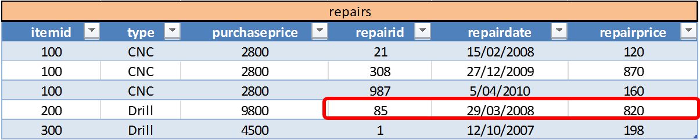
- Then we are actually deleting more than we probable want to. We would lose information about the drill itself.
- This is called a deletion anomaly.
- Can anyone point out the actual cause ?
- Information about different entities in a single relation.
Modification Anomalies
- What if we wanted to add a repair to the database for a machine that hasn't been repaired before.
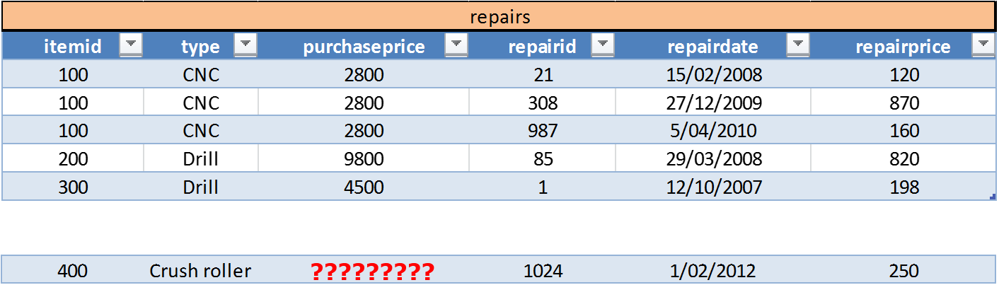
- But the repairmen don't know the purchase price of the machine.
- This is called an insertion anomaly.
- Can anyone point out the actual cause ?
- Information about different entities in a single relation.
Modification Anomalies
- What if we want to change the address of evy ?
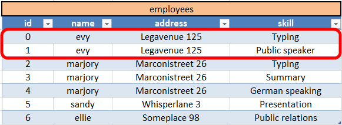
- If we forget to change both records, we will end up with inconsistent data.
- This is called an update anomaly.
- Can anyone point out the actual cause ?
- Information duplication.
Solving Modification Problems
- Most modification problems are solved by breaking an existing table into two or more tables through a process known as normalization.
Solving Modification Problems
- Relations are categorized as a normal form based on which modification anomalies or other problems that they are subject to.
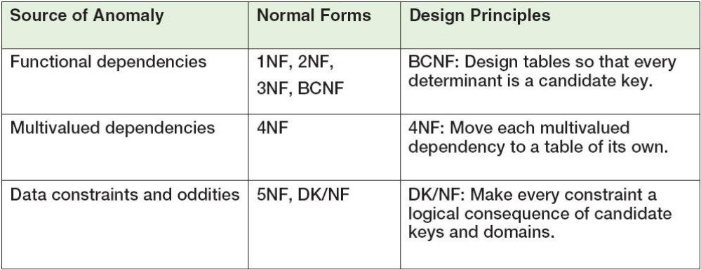
Normal Forms
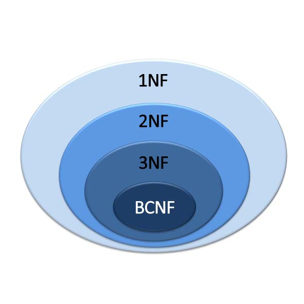
Normal Forms
- A relation is in 1NF if it is a table that qualifies as a relation.
Normal Forms
- A relation is in 1NF if it is a table that qualifies as a relation.
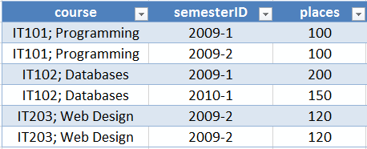
- This table is not in 1NF (qualify as a relation). Why ?
- Multiple attributes in single cell
- Duplicate rows
Normal Forms
- A relation is in 2NF if it is in 1NF and every non-key attribute is fully dependent on the primary key
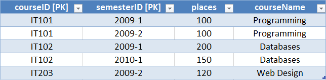
FD1: (courseID, semesterID) => places, courseName
FD2: courseID => courseName
- This relation is not in 2NF. Why ?
- courseName depends on part of the PK (courseID) but not the whole key
Normal Forms
- A relation is in 3NF if it is in 2NF and if for each functional dependency
X => Ain R at least one of the following conditions are met:- X is a key or superkey in R
- A is a prime attribute (part of a candidate key) in R
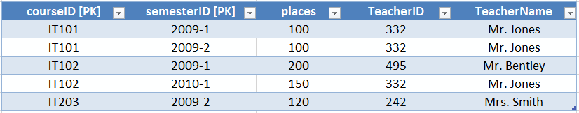
FD1: (courseID, semesterID) => places, TeacherID, TeacherName
FD2: TeacherID => TeacherName
- This relation is not in 3NF. Why ?
- TeacherName depends on TeacherID
Normal Forms
- A relation is in 3NF if it is in 2NF and if for each functional dependency
X => Ain R at least one of the following conditions are met:- X is a key or superkey in R
- A is a prime attribute (part of a candidate key) in R
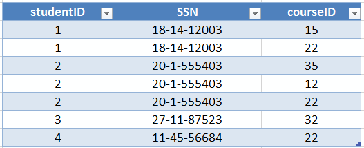
FD1: (studentID, courseID) => SSN
FD2: (SSN, courseID) => studentID
FD3: studentID => SSN
FD4: SSN => studentID
- This relation is in 3NF because SSN and studentID are both parts of a candidate key
Normal Forms
- A relation R is in BCNF if it is in 3NF and for each functional dependency
X => Ain R, X is a key or superkey in R. In other words, a relation is in BCNF if every determinant is a candidate key.
FD1: (studentID, courseID) => SSN
FD2: (SSN, courseID) => studentID
FD3: studentID => SSN
FD4: SSN => studentID
- This relation is not in BCNF. Why ?
- Because SSN and studentID are not candidate or primary keys
Normal Forms
“The data depends on the key [1NF], the whole key [2NF] and nothing but the key [3NF], so help me Codd.” by Edgar F. Codd
Normalization
Boyce-Codd Normal Form (BCNF)
- Identify every functional dependency.
- Identify every candidate key.
- If there is a functional dependency that has a determinant that is not a candidate key:
- Move the columns of that functional dependency into a new relation.
- Leave a copy of the determinant as a foreign key in the original relation.
- Create a referential integrity constraint between the original relation and the new relation.
- Repeat step 3 until every determinant of every relation is a candidate key.
In step 3, if there is more than one such functional dependency, start with the one with the most columns.
Boyce-Codd Normal Form (BCNF)
- You may have to remove duplicates in the new relation !
Examples 1 - Articles
- Identify every functional dependency.
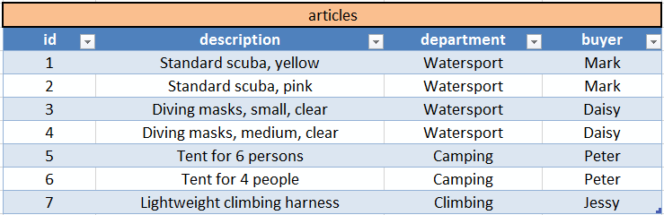
FD1: id => (description, department, buyer)
FD2: description => (id, department, buyer)
FD3: buyer => department
Examples 1 - Articles
- Identify every candidate key.
- A candidate key is a key that determines all of the other columns in a relation.
FD1: id => (description, department, buyer)
FD2: description => (id, department, buyer)
FD3: buyer => department
FD1 [CK]: id => (description, department, buyer)
FD2 [CK]: description => (id, department, buyer)
Examples 1 - Articles
- Is there a functional dependency that has a determinant that is not a candidate key ?
FD1: id => (description, department, buyer)
FD2: description => (id, department, buyer)
FD3: buyer => department
FD3: buyer => department
Examples 1 - Articles
- Move the columns of that functional dependency into a new relation.
- Leave a copy of the determinant as a foreign key in the original relation. => Or surrogate key
- Create a referential integrity constraint between the original relation and the new relation.
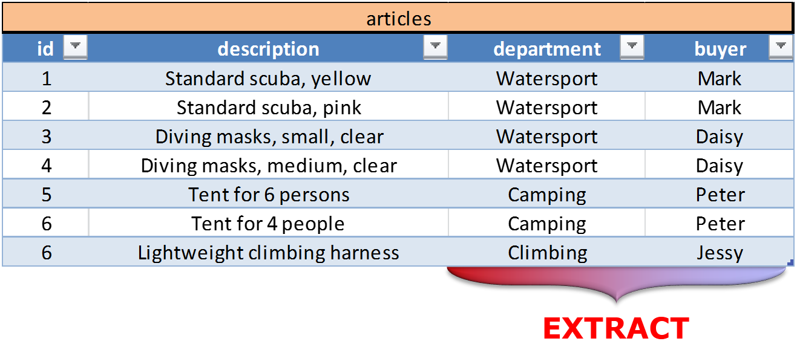
Examples 1 - Articles
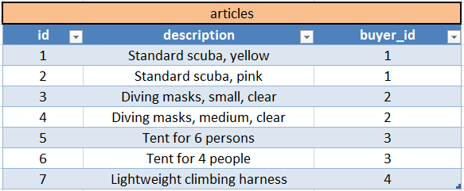
FD1: id => (description, buyer_id)
FD2: description => (id, buyer_id)
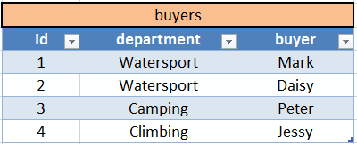
FD1: id => (department, buyer)
FD2: buyer => (department, id)
RIC: WHERE articles.buyer_id MUST EXIST in buyers.id
Examples 2 - Repairs
- Identify every functional dependency.
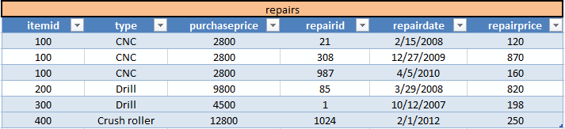
FD1: itemid => (type, purchaseprice)
FD2: repairid => (repairdate, repairprice, itemid, type, purchaseprice)
Examples 2 - Repairs
- Identify every candidate key.
- A candidate key is a key that determines all of the other columns in a relation.
FD1: itemid => (type, purchaseprice)
FD2: repairid => (repairdate, repairprice, itemid, type, purchaseprice)
FD2 [CK]: repairid => (repairdate, repairprice, itemid, type, purchaseprice)
Examples 2 - Repairs
- Is there a functional dependency that has a determinant that is not a candidate key ?
FD1: itemid => (type, purchaseprice)
FD2: repairid => (repairdate, repairprice, itemid, type, purchaseprice)
FD1: itemid => (type, purchaseprice)
Examples 2 - Repairs
- Move the columns of that functional dependency into a new relation.
- Leave a copy of the determinant as a foreign key in the original relation. => Or surrogate key
- Create a referential integrity constraint between the original relation and the new relation.
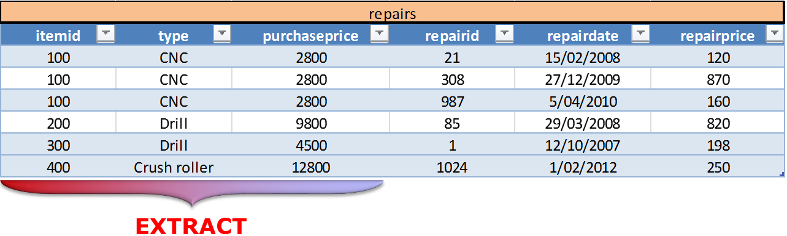
Examples 2 - Repairs
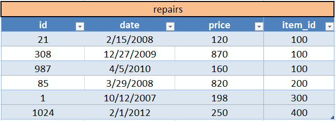
FD1: id => (date, price, item_id)
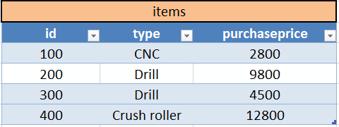
FD1: id => (type, purchaseprice)
RIC: WHERE repairs.item_id MUST EXIST in items.id
- Notice how the column titles don't have to specify the entity name (subject of interest) anymore.
More examples
- See page 100 till 107 for 3 more examples.
- Try them out yourself !!!!!!